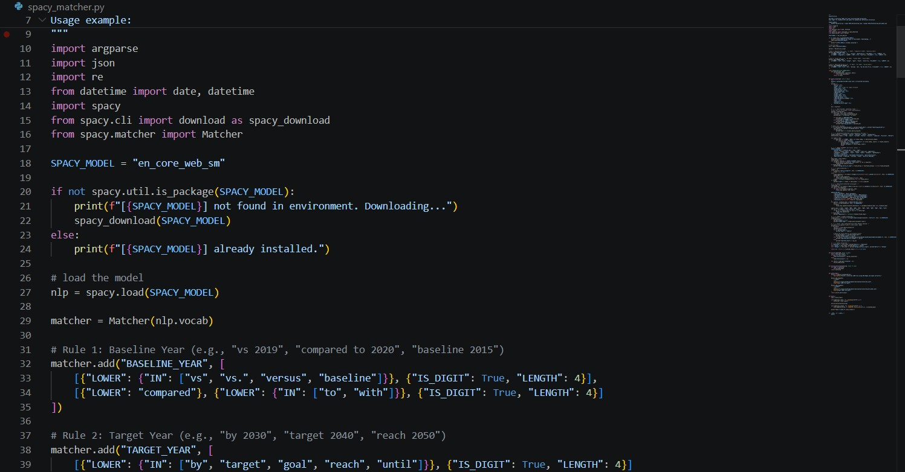
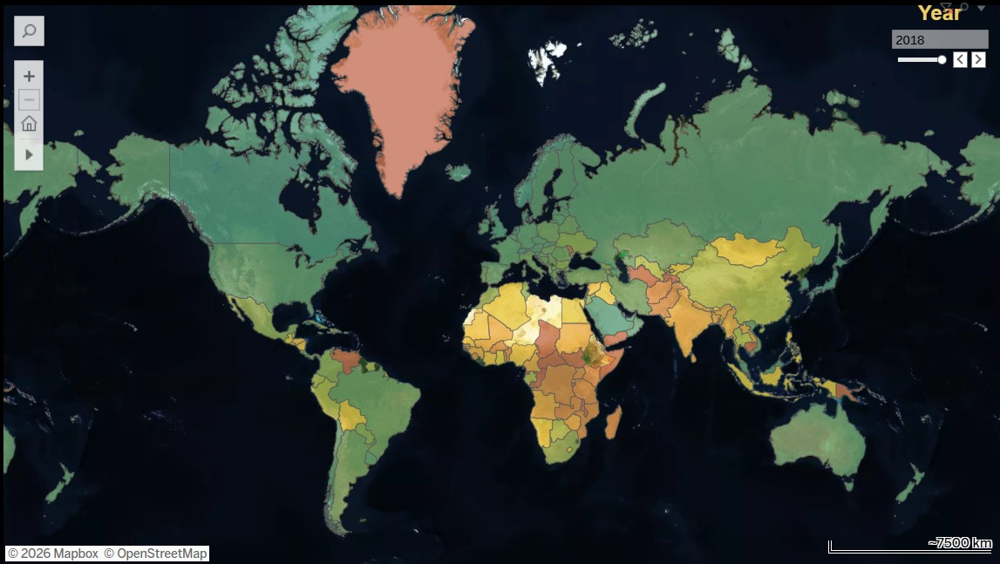
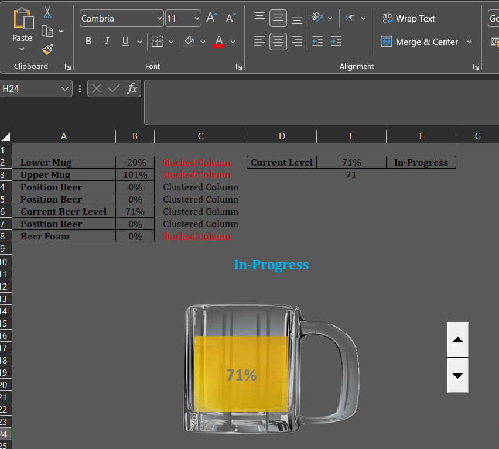

Python & Machine Learning
Advanced data science configurations involving predictive modeling, automation scripts, and custom pipeline workflows.
Explore ReposMy current initiatives focus on architecting production-grade semantic NLP pipelines within regulatory compliance frameworks. By splitting unstructured legislative texts into deterministic semantic units and transforming them into vector embeddings, I design traceable, high-fidelity downstream systems that drive corporate analytics and claim verification workflows.
My technical domain knowledge is anchored by an MSc in Data Science from Aston University, where I constructed local LLM-powered MVPs utilizing MongoDB to process unstructured environments. This is heavily complemented by an analytical background in Industrial Engineering from Payame-Noor University, specializing in statistical probability, quality assurance protocols, and systems optimization techniques.
A structured compendium of data engineering and machine learning implementations spanning core corporate ecosystems. Click on any category to explore the production repositories and visualization profiles.

Advanced data science configurations involving predictive modeling, automation scripts, and custom pipeline workflows.
Explore Repos
Comprehensive data preprocessing, extensive database normalization, and multi-table merging utilizing complex corporate datasets.
View Queries
Real-time corporate performance monitoring frameworks engineered to establish automated visibility across operational departments.
Examine Dashboards
Interactive data dashboards, analytical macro-trend stories, and dynamic operational reporting across diverse fields.
View Public Profile
Deep analytical modeling, metric visualization, and reporting workflows driven by direct database outputs.
Review Workbooks